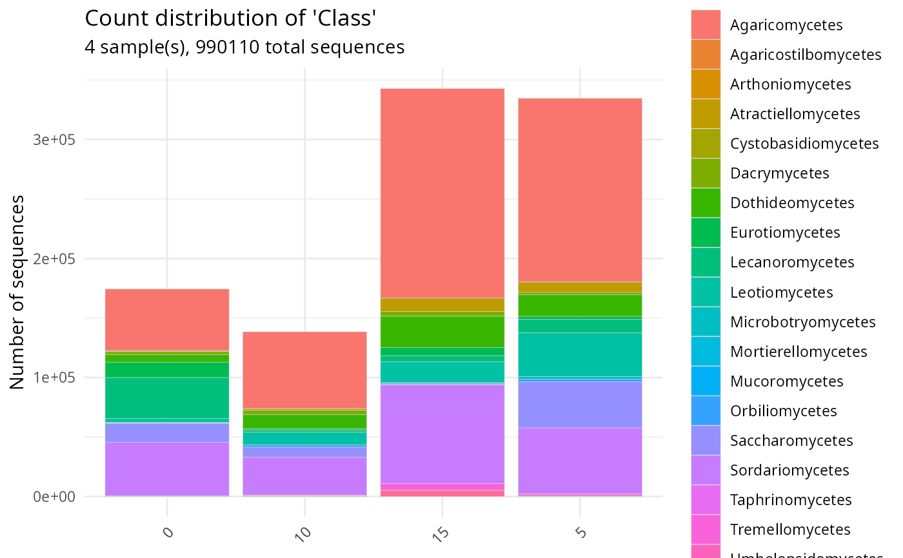

Plot taxonomic counts (non-proportion) in function of a factor with stacked bars
Source:R/plot_tax_count_pq.R
plot_tax_count_pq.Rd
A non-proportion ("non-fill") variant of MiscMetabar::plot_tax_pq():
counts of the chosen taxonomic rank are stacked per sample without
being normalised to proportions, so the y-axis reports the raw number
of sequences. Useful when the absolute abundance per sample matters
(e.g. spike-in normalisation, biomass comparisons) and a proportional
view would hide it.
Implemented as a fresh function in ggplotpq rather than a parameter
on MiscMetabar::plot_tax_pq(), so the proportion version keeps its
existing behaviour and the new variant is free to evolve.
plot_tax_count_pq(
physeq,
fact = NULL,
merge_sample_by = NULL,
type = "nb_seq",
taxa_fill = "Order",
color_border = "lightgrey",
linewidth = 0.1,
add_info = TRUE,
na_remove = TRUE,
clean_pq = TRUE
)Arguments
- physeq
(required) A phyloseq::phyloseq object.
- fact
(required) Name of the factor to cluster samples by modalities. Need to be in
physeq@sam_data.- merge_sample_by
A vector to determine which samples to merge using
MiscMetabar::merge_samples2(). Need to be inphyseq@sam_data.- type
If "nb_seq" (default), the number of sequences is used in plot. If "nb_taxa", the number of ASV is plotted. If both, return a list of two plots, one for
nbSeqand one forASV.- taxa_fill
(default: 'Order') Name of the taxonomic rank of interest.
- color_border
(default: 'lightgrey') Color of the bar borders.
- linewidth
(default: 0.1) The line width of
geom_col.- add_info
(logical, default TRUE) If TRUE, add a title and subtitle with information about the total number of sequences and the number of samples per modality.
- na_remove
(logical, default TRUE) If TRUE, remove all samples with NA in the
factvariable of thephyseq@sam_dataslot.- clean_pq
(logical, default TRUE) If TRUE, empty samples are discarded after subsetting ASV.
Value
A ggplot2::ggplot object.
See also
Examples
# \donttest{
data(data_fungi_sp_known, package = "MiscMetabar")
plot_tax_count_pq(
data_fungi_sp_known,
"Time",
merge_sample_by = "Time",
taxa_fill = "Class"
)
#> ℹ 23 samples discarded due to NA in `fact`.
#> Cleaning suppress 3 taxa and 1 samples.

# }